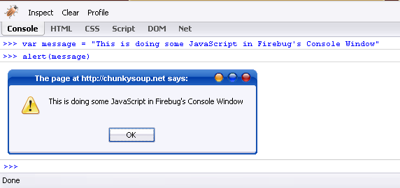
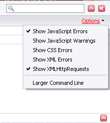
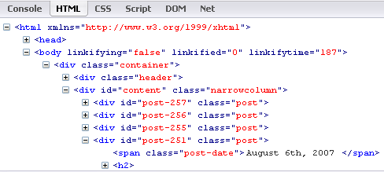

Hello World!
Russell Heimlich (like the maneuver)
http://www.russellheimlich.com/blog
The Old Way of Development
- Open Webpage in Editor
- Open Webpage in Browser
- Make Change in Editor
- Refresh Page in Browser
- Scratch your head?
- Repeat for every teeny, weeny change
What is wrong with this?
- Slow
- Repetitive
- Tedious
- Hit or Miss
- Lack of control
There has got to be a better way...
Welcome to Firebug
Web Development Evolved
- Firebug is a Firefox extension
- Developed by Joe Hewitt
- Provides a wealth of web tools at your fingertips.
- Get it at www.GetFirebug.com
Installation
- Note you will need to have the DOM Inspector enabled
- This was one of those check marks you saw when first installing Firefox
- If Firebug doesn't work, try reinstalling Firefox.
Getting Started
- After Installing it you will notice a green checkmark in your status bar.
- This green check box turns red when you come across errors.
- Clicking on it will bring up the Firebug console window.

The Console Window
- This will show you JavaScript, XML, or CSS errors.
- Only the errors for the page you are looking at will be displayed.
- Jump right to the problem in the debugger
- Filter errors by:
- JavaScript Errors
- JavaScript Warnings
- CSS Errors
- XML Errors
- XML HttpRequests

HTML Inspection
- Dig through the nested source code.
- The source code is live and will even highlight changes as they happen.
- Edit HTML live
- You can edit any HTML attributes or text by clicking on it.
- Test out how much text can fit in an element
- Double clicking lets you edit the element with real time previews
- Made a goof? Don't worry everything will reset itself when you refresh the page
- Highlight an element by hovering over it.

More HTML Goodness
- Inspect any element using your mouse.
- Go right to what you were looking for with the search field.
- Copying is made easy by right clicking on an element.
- You can copy:
- The HTML
- Just the innerHTML
- An XPath expression that identifies an element uniquely.
- Climb up the DOM Tree via the hirarchy navigation.
CSS Zen
- Hide and Show CSS styles for any element
- Add or remove properties to CSS Rules or just a single element.
- Visualize the cascade via properties that are struck out.
- Preview colors and images by simply hovering over them.
- Identify which CSS file and line number the code is coming from.
- Clicking on it will take you straight there.
Visualize the Box Model
- See padding, margins, and borders highlighted
- Padding is purple, margins are yellow.
- Identify the size of an element by seperating it's dimensions from padding, borders, and margins.
- See rulers and guides by hovering over the different parts of the box model.
- Change widths incrementally by holding down the up or down arrow.
Other Features
- See performance of your page using the 'Net' tab.
- See everything in the 'DOM' tab.
- Step through Script code using breakpoints.
- Log JavaScript Errors
Plugins
- YSlow (developer.yahoo.com/yslow/) - Performance report card giving tips on making your page more effiecient. Based on Yahoo's Rules for High Performance.
- FirePHP (FirePHP.org) - Bring the backend logic to Firebug so you can debug right from the browser.
Notes
This presentation can be downloaded at http://www.russellheimlich.com/barcamp/
- Firebug - http://www.GetFirebug.com
- Joe Hewitt http://www.JoeHewitt.com/
- Yslow - http://developer.yahoo.com/yslow/
- FirePHP - http://www.FirePHP.org
- Sample page - http://www.russellheimlich.com/barcamp/sample.html